10. The COBOL Package¶
Or. “How do I access COBOL-defined data from Python”?
We have three problems to solve to get COBOL data into Python applications.
- Most of the cell.Cell subclasses aren’t really appropriate for data coming from COBOL applications. Indeed, only cell.TextCell is really appropriate.
- The schema more complex than the
flat-file schema expected by schema.
- The structure is hierarchical.
- Each attribute has a large number of properties required for proper conversion to Python types.
- There are repeating groups (based on the “OCCURS” clauses).
- There are attributes with locations based on other attributes. These are defined by Occurs Depending On clauses.
- There are fields that may have invalid data due to a “REDEFINES” clause. The USAGE information indicates the encoding of the data which is expected to be in the field, the actual data may not match the definition.
- The schema is encoded in COBOL. That is the subject of COBOL Loader Module – Parse COBOL Source to Load a Schema.
10.1. Requirements¶
The essential COBOL use case is to create usable Python objects from the source file data.
For each source file row, there’s a two-step operation.
- Access elements of each row using the COBOL DDE structure.
- Build Python objects from the Cells found in the row. Building Python objects is best done with a “builder” function, as shown above in Schema Package – Schema and Attribute Definitions, The Stingray Developer’s Guide, and Stingray Demo Applications.
- Split the file into sections for parallel processing. The GNU/Linux split command won’t work with EBCDIC files, so we have to use the low-level RECFM definitions to parse and split a file.
10.1.1. High-Level Processing¶
A sheet.Row appears to be a sequential collection of cell.Cell instances. The schema is used for lazy creation of cell.Cell instances. Cells may have bad data, and the use of REDEFINES means that a row cannot be built eagerly.
with open("sample/zipcty.cob", "r") as cobol:
schema= stingray.cobol.loader.COBOLSchemaLoader( cobol ).load()
#pprint.pprint( schema )
for filename in 'sample/zipcty1', 'sample/zipcty2':
with stingray.cobol.Character_File( filename, schema=schema ) as wb:
sheet= wb.sheet( filename )
counts= process_sheet( sheet )
pprint.pprint( counts )
The Character_File class is for files in all character (no packed decimal) encoded in ASCII. These kinds of files are expected to have proper '\n' characters at the end of each record.
For an EBCDIC file, use the cobol.EBCDIC_File class. These files lack a specific record delimiter character. If the “RECFM” (Record Format) is V or VB, there’s a header word with length instead of a delimiter.
Processing a COBOL “sheet” is a slight extension to processing workbook sheets. We can turned the simple sequential COBOL-based schema into a dictionary. The keys are the simple field names as well as the full field paths.
def process_sheet( sheet ):
# Simple field names
schema_dict= dict( (a.name, a) for a in sheet.schema )
# Dot-puncutated field paths
schema_dict.update( dict( (a.path, a) for a in sheet.schema ) )
counts= { 'read': 0 }
row_iter= sheet.rows()
row= next(row_iter)
header= header_builder( row, schema_dict )
print( header )
for row in row_iter:
data= row_builder( row, schema_dict )
print( data )
counts['read'] += 1
return counts
This relies on two functions to access elements: header_builder() and row_builder(). Each of these will use the dictionary schema to access individual elements.
10.1.2. Access Elements Via Schema¶
A function like the following builds an object from a row using the schema.
def header_builder(row, schema):
return types.SimpleNamespace(
file_version_year= row.cell(schema['FILE-VERSION-YEAR']).to_str(),
file_version_month= row.cell(schema['FILE-VERSION-MONTH']).to_str(),
copyright_symbol= row.cell(schema['COPYRIGHT-SYMBOL']).to_str(),
tape_sequence_no= row.cell(schema['TAPE-SEQUENCE-NO']).to_str(),
)
We use schema['FILE-VERSION-YEAR'] to track down the attribute details. We use this information to build a Cell from the current row.
We also need to handle repeating groups. In the case of repeating elements, the repeating collection of elements creates a tuple-of-tuples structure which we can index.
This gives us two possible ways to provide an OCCURS index values. The first possibility is to associate the index with the schema.Attribute.
def process_sheet( sheet ):
for row in sheet.rows():
foo= row.cell(schema[n]).to_str()
bar= row.cell(schema[m].index(i, j)).to_str()
While the above is weird, it parallels COBOL usage of indexing and element naming. The idea is to provide the lowest level of name and all the indexes above it in one construct.
This is appealing because we can use the existing sheet.Row.cell() method without any modification. The downside of this is that we’re creating a tweaked attribute definition, which is a terrible idea. On balance, the use of schema.Attribute.index() has to be rejected.
The second way to provide an index is provide a subset of the indexes and get a kind of slice. This is like the positional version, shown above.
def process_sheet( sheet ):
for row in sheet.rows():
foo= row.cell(schema[n]).to_str()
bar= row.cell(schema[m])[i][j].to_str()
10.1.3. Possible Added Fluency¶
The path names are awkward to use since they must include every level from the 01 to the relevant item.
A subclass of schema.Schema could introduce a method like get_name() to make a schema into a slightly more fluent mapping in addition to a sequenmce.
foo= row.cell(schema_dict.get_name('bar'))
baz_i_j= row.cell(schema_dict.get_name('baz').index(i, j))
This doesn’t work for non-unique names.
The COBOL OF syntax could be modeled using a fluent of() method.
foo= row.cell(schema_dict.get('foo').of('bar'))
baz_i_j= row.cell(schema_dict.get('baz').index(i, j))
baz_i_quux_j = row.cell(schema_dict.get('baz').index(i).of('quux').index(j))
This is all potentially useful for hyper-complex COBOL record layouts.
Incremental index calculation involves creating an interim, stateful Attribute definition. The “cloning” and “tweaking” of an schema.Attribute definition is a bad design. The index processing is stateful, and we would need to accumulate index information somehow along the path of fluent methods.
This works out better if the sheet.Row.cell method handles the index calculations entirely separate from the attribute navigation. The following seems like a more sensible way to handle this.
foo= row.cell(schema_dict.get('foo').of('bar'))
baz_i_j= row.cell(schema_dict.get('baz'), i)
baz_i_quux_j = row.cell(schema_dict.get('baz').of('quux'), (i, j))
The first example provides no index, a multi-dimensional sequence of Cell objects is returned.
The second example provides too few indices, a sequence of Cell objects is returned.
The third example provides all indices, an individual Cell is returned.
10.1.4. Generic Processing¶
The cobol.dump() function can dump a record showing raw bytes.
This relies on the cobol.dump_iter() function. This function iterates through all DDE elements (in order) providing a five-tuple of the original DDE, the derived attribute, a tuple of specific index values used, the raw bytes found and any Cell object if the data was actually valid.
The indices tuple may be an empty tuple for non-OCCURS data. For OCCURS data, all combinations of index values are used, so large, nested structures may produce long lists of values.
The raw bytes and the Cell object are (technically) redundant, since all subclasses of Cell used by the cobol package have a raw attribute with the raw bytes. However, it’s sometimes simpler to have this expanded in the tuple.
10.1.5. The Occurs Depending On Problem¶
There are two kinds of DDE’s: group and elementary. A group DDE is a collection of DDE’s. An elementary does not contain anything. This makes a DDE a proper tree.
A DDE,  , has two interesting properties: the offset, 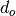, and the
size, 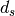. We’re interested in the bytes associated with a particular DDE
element, 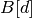. These bytes are fetched from a larger buffer, 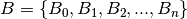.
, has two interesting properties: the offset, 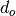, and the
size, 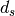. We’re interested in the bytes associated with a particular DDE
element, 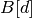. These bytes are fetched from a larger buffer, 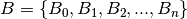.
This allows us to fetch the bytes from a buffer by getting bytes 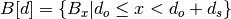.
The size of an elementary DDE, , is fixed by the picture clause.
The size of a group DDE is the sum of the children. 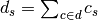. While this seems clear, it doesn’t include the OCCURS clause issues: we’ll return to those below.
The DDE’s in a tree can have three species of relationships.
Predecessor/Successor. The predecessor of
is 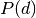.The offset of an item is 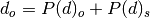. This applies recursively to the first item in the DDE collection. For the first item in a DDE,
 , 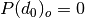 and 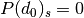.
, 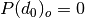 and 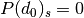.Parent/Child. The parent contains a group of items; the parent of
is 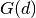,
we can say 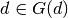.Redefines. This DDE’s offset (and size) is defined by another item, 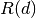. 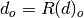 and 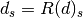.
The predecessor/successor relationship is implied by the order of the DDE’s as they’re compiled. If they have the same level number, they’re successors.
The child relationship is specified via the level numbers. A larger level number implies a child of a lower level number.
The redefines relationship is specified via the REDEFINES clause.
This is complicated by the OCCURS clause. There are two versions in the COBOL language manual, to which we’ll add third.
- “Format 1” has a fixed number of occurrences, 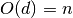, comes from OCCURS n TIMES.
- “Format 2” means the number of occurrences depends on a piece of data, in another DDE, the depends-n basis, 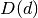. This means that 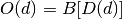. This comes from OCCURS n TO m TIMES DEPENDING ON b. The lower and upper bounds, n and m, are irrelevant. Only the dependency matters.
- To this, we can add “Format 0” which has a single occurrence, 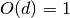. This is the default if no occurrence information is provided.
This adds another interesting attribute, the total size of an item, 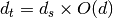. The total size is the elementary size times the number of occurrences.
This changes our definition of size of a group item to the sum of the total sizes, not the sum of the simple size. 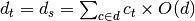.
This also changes how we fetch the bytes, , because we need index information for each OCCURS clause in the parents of d. In COBOL we might be getting D( I ).
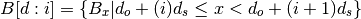
The indices may be much more complex, however. A common situation is a group-level item with an occurrence that nests an elementary item with an occurrence. This is a two-dimensional structure. In COBOL it might be D( J ) OF G( I ). More commonly, it’s written D( I, J ) where the indices are applied from top-most group DDE down the tree to the lowest-level items.
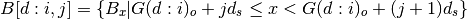
The offset, is computed recursively using a combination of predecessors, , groups, , and redefinitions, . There are several cases.
- If there’s a REDEFINES clause,
 .
. - If there’s a predecessor, 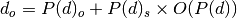.
- If there’s no predecessor, there may be a containing group, 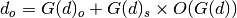. This is more complex than it appears because a group could contain an occurrence clause. 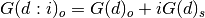.
- If there’s no predecessor and no group, 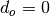.
The two cases which involve the occurs information, 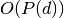 and 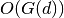 may include “format 2” occurs and depend on data within an actual record. We may have 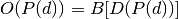 or 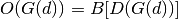.
10.1.6. Variable-Length COBOL Records¶
V (Variable)
This format has one logical record as one physical block. A variable-length logical record consists of a record descriptor word (RDW) followed by the data. The record descriptor word is a 4-byte field describing the record. The first 2 bytes contain the length of the logical record (including the 4-byte RDW). The length can be from 4 to 32,760 bytes. All bits of the third and fourth bytes must be 0, because other values are used for spanned records. This format is seldom used.
VB (Variable Blocked)
This format places several variable-length logical records (each with an RDW) in one physical block. The software must place an additional Block Descriptor Word (BDW) at the beginning of the block, containing the total length of the block.

See http://en.wikipedia.org/wiki/Data_set_(IBM_mainframe)
See http://www.simotime.com/vrecex01.htm
There are three relevant encoding possibilities. These are the COBOL “RECFM” options in the JCL for the file. Each record is preceded by a Record Descriptor Word (RDW).
V Variable.
The four bytes preceding the logical record is the Record Descriptor Word. The content is as follows.
Bytes Description 1-2 This is the length of the logical record plus the length of the four-byte Descriptor Word. 3-4 Usually low values
VB Variable Blocked.
The four bytes preceding the logical record (Descriptor Word) are as follows.
Bytes Description 1-2 This is the length of the logical record plus the length of the four-byte Descriptor Word. 3-4 The length of the block including four-byte Descriptor Word.
A block can have multiple records in it. The block length must be >= record length.
VBS Variable Blocked Spanned.
The four bytes preceding the logical record is the Segment Descriptor Word. The content is as follows.
Bytes Description 1-2 This is the length of the logical record plus the length of the four-byte Descriptor Word. 3 Segment Control Codes: see below. 4 Low value, reserved for future use Segment Control Code
Value Relative position of segment 00 A complete logical record 01 The first segment of a multiple segments record 02 The last segment of a multiple segments record 03 A middle segment of a multiple segments record
This RECFM detail must be provided as part of opening the workbook/sheet so that rows can be properly located within the content.
We’ve added a series of RECFM classes as a Strategy to read files with variable length records.
10.1.7. Low-Level Split Processing¶
We may have a need to split an EBCDIC file, similar to the Posix split command. This is done using cobol.RECFM parsers to read records and write to new file(s).
A splitter looks like this:
import itertools
import stringray.cobol
import collections
import pprint
batch_size= 1000
counts= collections.defaultdict(int)
with open( "some_file.schema", "rb" ) as source:
reader= stringray.cobol.RECFM_VB( source ).bdw_iter()
batches= itertools.groupby( enumerate(reader), lambda x: x[0]//batch_size ):
for group, group_iter in batches:
with open( "some_file_{0}.schema".format(group), "wb" ) as target:
for id, row in group_iter:
target.write( row )
counts['rows'] += 1
counts[str(group)] += 1
pprint.pprint( dict(counts) )
There are several possible variations on the construction of the reader object.
- cobol.RECFM_F( source ).record_iter() – result is RECFM_F.
- cobol.RECFM_F( source ).rdw_iter() – result is RECFM_V; RDW’s have been added.
- cobol.RECFM_V( source ).rdw_iter() – result is RECFM_V; RDW’s have been preserved.
- cobol.RECFM_VB( source ).rdw_iter() – result is RECFM_V; RDW’s have been preserved; BDW’s have been discarded.
- cobol.RECFM_VB( source ).bdw_iter() – result is RECFM_VB; BDW’s and RDW’s have been preserved. The batch size is the number of blocks, not the number of records.
10.1.8. The Bad Data Problem¶
Even with a sheet.LazyRow, we have to be tolerant of COBOL data which doesn’t match the schema. The cobol.defs.Usage.create_func() function may encounter an exception. If so, then a cobol.defs.ErrorCell is created instead of the class defined by the Usage and Picture classes.
The cobol.defs.ErrorCell includes the raw bytes, but a value of None.
10.2. Implementation¶
These are the modules that extend the core functionality of Stingray to handle COBOL files and EBCDIC data.